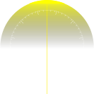
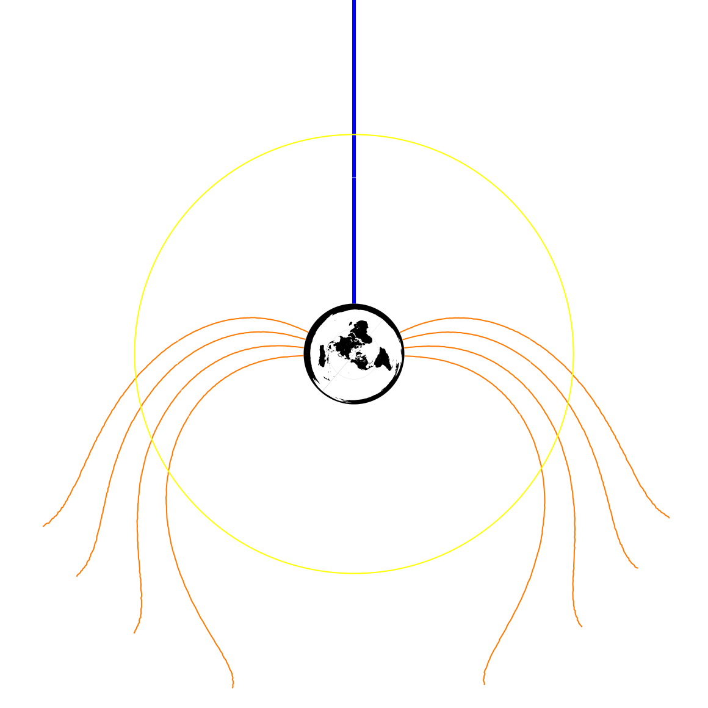
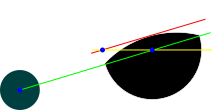
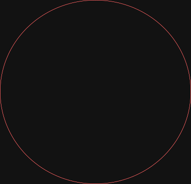
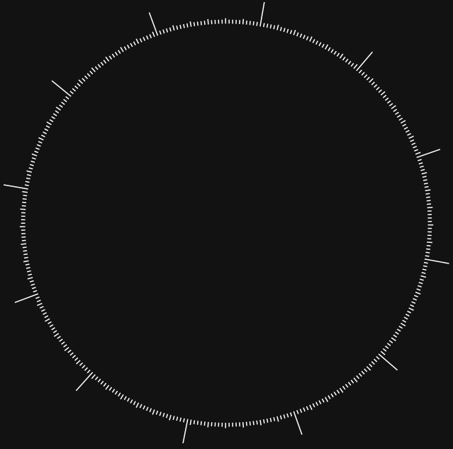
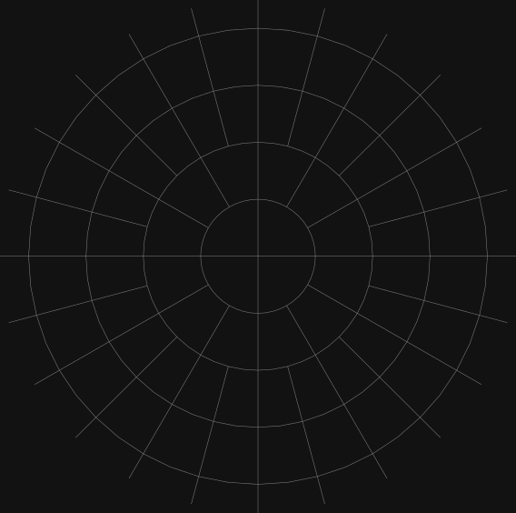
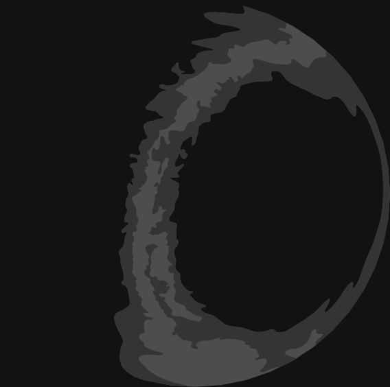

Opombe k zvezdoslovni uri
Vhodni podatki / viri
- Privzeti zemljepisni položaj, za katerega veljajo podatki prikazani na uri je Slovenija (Ljubljana, 46° g.š., 15° g.d.).
- Privzeta dolžina leta: 365.2425 dni.
- Privzeta dolžina luninega meseca je 29 dni, 12 ur, 44 minut in 2.9 sekund.
- Podatki za sončni vzhod in zahod za označbe na uri so povzeti po Time and Date za Ljubljano, za leto 2000.
- Enačba za izračun dneva prehoda na zimski/poletni čas je povzeta po članku Poletni čas (Wikipedija).
nedelja (31 - (celi del(((5 * leto) / 4) + 4) mod 7)). marec ob 02.00
nedelja (31 - (celi del(((5 * leto) / 4) + 1) mod 7)). oktober ob 02.00 - Podatki za datum, uro in zemljepisni položaj so pridobljeni z naprave in so odvisni od nastavitev, oz. zmogljivosti naprave (računalniki običajno nimajo GPS-a, zato ima naprava določen položaj glede na središče nastavljene države v nastavitvah naprave).
- Številski podatki o položajih planetov, Sonca in Lune, ki so prikazani v konzoli (pod data), se pridobivajo z API od Astronomy API
- Podatki v stranskem oknu, ki se uporabijo (za Luno) tudi na uri, so izračunani z Javascriptom SunCalc Volodymyrja Agafonkina (GitHub) [arhivirano]
Sončna ura
Letna številčnica

Leto je razdeljeno na 12 mesecev, zapisanih s slovenskimi poimenovanji.
Notranji trak črtic označuje dni in meje mesecev za navadno leto, zunanji pa za prestopno, ki ima en dan konec februarja več, zato so tudi dnevi od tam naprej zamaknjeni za enega naprej in se leto konča po mestu, kjer se začne to prestopno leto.
Prestopno je vsako leto, ki je deljivo s 4 (vsako 4. leto), razen če je deljivo tudi s 100. Če pa je deljivo tudi s 400, je ponovno prestopno.
Leto namreč ni dolgo točno 365 dni, ampak, kot smo privzeli za to uro, 365.2425 dni, na koncu leta ostane še 0.2425 dneva, kot je razvidno z ure.
Letna številčnica je zasukana tako, da je spodaj zimski obrat, desno spomladansko enakonočje, zgoraj poletni obrat in levo jesensko enakonočje. K zasuku bi lahko bila prišteta še zamuda koledarskega začetka leta za astronomskim, vendar bi največji zamik znašal le en dan, torej manj kot stopinjo:
zamuda = trenutnoleto * 0.2425 - (trenutnoleto - 1) / 4 + (trenutnoleto - 1) / 100 - (trenutnoleto - 1) / 400
Letna številčnica je zasukana tako, da je spodaj zimski sončev obrat, na desni spomladansko enakonočje, zgoraj poletni sončev obrat, na levi pa jesensko enakonočje; kar je vse tudi označeno. Posledično je namreč spodnja četrtina kroga zima, desna pomlad, zgornja poletje in leva jesen.
Letni sklop

Urni prikaz je 24-uren, kar mora biti, ker urni kazalec pravzaprav prikazuje vrtenje Zemlje okoli svoje osi, oz. naš položaj na Zemlji glede na Sonce. Ker se Zemlja vrti v pozitivni smeri, oz. nasprotni smeri (običajnega) urnega kazalca, se tudi kazalci na tej uri vrtijo v pozitivni smeri.
Urni kazalec je modri, minutni srednje širok beli in sekundni kazalec ozek beli.
Napisana je vsaka druga ura, kar olajša razbiranje minut - med vsako napisano uro je 5 minut, tako kot pri običajni 12-urni uri. 60 (minut) deljeno 12 (ur) je namreč 5 (minut). Enako kot za minute velja tudi za sekunde (ker jih je v nadrejeni enoti prav tako 60).
Krajših črtnih oznak je tako na uri 60; daljše pa označujejo še neoznačene ure, ki padejo med minutne/sekundne oznake (število 60 namreč ni celoštevilsko deljivo s 24).
Zgoraj, kjer je ura 12, torej poldne, je Sonce, saj je opoldne to najbolj v nadglavišču. Od Sonca teče rumeni letni kazalec skozi urno številčnico in jo razpolavlja, tako da označuje poldne in polnoč, ter kaže dan v letu na letni številčnici

Skupina štirih rdečih krivulj na desni predstavlja sončni vzhod, skupina na levi pa zahod. Sončni vzhod je, ko črte na levi strani prečkajo letni kazalec; sončni zahod pa, ko ga prečkajo črte na desni strani.
- Zgornji krivulji predstavljata konec zore (/meščanskega sončnega vzhoda) in začetek pravega/običajnega sončnega vzhoda, oz. konec pravega/običajnega sončnega zahoda in začetek mraka (/meščanskega sončnega zahoda)
- Drugi krivulji od zgoraj predstavljata konec pomorske zore in začetek zore (/meščanskega sončnega vzhoda); oz. konec mraka (/meščanskega sončnega zahoda) in začetek pomorskega mraka.
- Tretji krivulji od zgoraj predstavljata konec zvezdoslovnega sončnega vzhoda in začetek pomorske zore; oz. konec pomorske zore in začetek zvezdoslovnega sončnega vzhoda.
- Spodnji krivulji predstavljata konec noči in začetek vesoljeslovskega mraka; oz. konec zvezdoslovnega mraka in začetek noči.
- Sončni vzhod/zahod - Na začetku sončnega vzhoda, oz. na koncu sončnega zahoda, se zgornji rob Sonca navidezno dotakne obzorja; na koncu sončnega vzhoda, oz. na začetku sončnega zahoda, pa se obzorja navidezno dotakne spodnji rob Sonca.
- Meščanska zora/mrak - del dneva pred sončnim vzhodom in po sončnem zahodu, ko je Sonce pod obzorjem od 0° do 6°. Takrat je zaradi sipanja svetlobe že/še svetlo na večini kopnega, vidne pa so še/že najsvetlejša zvezdna telesa; zato se na začetku meščanske zore javna razsvetljava ugasne, oz. se na koncu meščanskega mraka prižgejo.
- Pomorska (navtična) zora/mrak - del dneva pred sončnim vzhodom in po sončnem zahodu, ko je Sonce pod obzorjem od 6° do 12°. Takrat je zaradi sipanja svetlobe že/še svetlo na morju, kjer je obzorje običajno najnižje (torej nižje kot na kopnem); zato je takrat hkrati skozi sekstant vidno obzorje in največ orientacijskih zvezd.
- Vesoljeslovska (astronomska) zora/mrak- del dneva pred sončnim vzhodom in po sončnem zahodu, ko je Sonce pod obzorjem od 12° do 16°. Na koncu vesoljeslovskeg zore že opazimo sipano sončno svetlobo v ozračju, oz. je na začetku vesoljeslovskega mraka ne opazimo več.
Rumen krog predstavlja našo dnevno tirnico (oblika in velikost sta prilagojeni za lažje branje in izdelavo). Njegov polmer je odvisen od tega, v katerem delu leta se nahajamo; njegov obod niha od manjšega prikaza Zemlje v sredini do oboda urne številčnice. Ob poletnem obratu, ko je dan najdaljši, je polmer kroga večji (leži na obodu urne številčnice), saj je dan daljši in smo glede na Sonce na nižji zemljepisni širini; ob zimskem obratu pa je polmer kroga manjši (leži na manjšem belem krogu v sredini), saj je dan krajši in smo glede na Sonce na višji zemljepisni širini. Presečišča kroga in krivulj tako povedo čase mraka/vzhoda/zahoda.
Sivi krog označuje položaj dnevno tirnico Sonca na enakonočje za lažjo predstavo. Ko je sončeva tirnica znotraj tirnice enakonočja, je na severnem polu polarni dan, na južnem polu pa polarna noč; ko pa je sončeva tirnica zunaj tirnice enakonočja, pa velja ravno obratno
Luna
Luna kroži okoli urne številčnice glede na čas v luninem mesecu. Tako prikazuje položaj glede na Zemljo in Luno.
Prikazana je tudi lunina mena, katere spodnji del je obrnjen proti središče urne številčnice, saj ta predstavlja Zemljo, s katere opazujemo Luno in se vidi ta mena.

Če je Sonce na zgornjem delu slike (tako oddaljeno, da so žarki v bistvu vzporedni), rumena črta na tej skici predstavlja mejo osvetljenosti Lune, gledano kot tloris. Zelena črta označuje kot, oz. položaj Lune glede na Zemljo. Izgled osvetljenosti Lune, kot je vidna z Zemlje (mene) se določi s pomočjo rdeče črte, ki je vzporedna zeleni, ter seka presečišče tlorisne osvetlitve (rumena črta) z robom Lune. Tako dobimo lok med presečišči zelene črte z Luninim obodom in sredino rdeče črte.
Za odmik loka mene od roba lune (odmik rdeče črte od bližje ležečega roba Lune) se uporabi enačba:
x = r * cos(φ % 90°), kjer je r polmer prikaza Lune, kot φ kot Lune v svojem kroženju okoli Zemlje, % pa je modulus (računanje ostanka pri deljenju z nekim številom).
Stransko okno
Za sončne vzhode, zahode, zore, mrake, poldneve in polnoči glej razlago pojmov pri Dnevnem sklopu.
Zlata ura (prevod je dobeseden iz ang. Golden hour): obdobje dneva kmalu po sončnem vzhodu ali pred sončnim zahodom, ko je Sonce nizko na nebu (med 6° pod in 6° nad obzorjem - po tej opredelitvi se zlata urazačne z meščansko zoro/mrakom), zato mora sončna svetloba prebiti večjo debelino ozračja, v katerem se barve višjih frekvenc (modri odtenki) razpršijo, do tal pa pridejo toplejše, bolj rdečkaste in zlato-rumene barve. Zlata ura je večjega pomena za fotografe. Čas zlate ure ni nujno 6o minut, temveč je odvisen od zemljepisne višine in letnega časa - najkrajša je ob enakonočju in na ekvatorju, najdaljša pa na polih, kjer poleti traja tudi do nekaj tednov.
Višina Sonca in Lune: kot med premicama izhodišče - obzorje in izhodišče - položaj Sonca/Lune. Ko je opazovano telo na obzorju je kot enak 0°, ko je v nadglavišču 90°; ko opazovano telo ni vidno (za Sonce je to ponoči), je kot višine negativen.
Kotni odmik (azimut) Sonca in Lune: ker se nahajamo na severni polobli, Sonce vidimo vedno na južni polovici obzorja, zato je za izhodišče azimuta vzet jug, ne sever. Na jugu je torej azimut 0°, proti vzhodu je pozitiven, proti zahodu pa negativen.
Paralaktični kot Lune: kot med pravokotnico na Zemljino površje v gledišču in ravnino Luninega kroženja. Kot je tako enak 0°, ko gre Luna skozi nadglavišče.
Kot Lune: središčni kot osvetljenega kraka lune, računano vzhodno od severne točke diska; luna je rastoča, če je kot negativen, in pojemajoča, če je pozitiven
Mena Lune: lunina faza; giblje se od 0,0 do 1,0:
| 0 | mlaj |
| rastoči srp | |
| 0.25 | prvi krajec |
| rastoča Luna | |
| 0.5 | ščip / polna luna |
| upadajoča Luna | |
| 0.75 | zadnji krajec |
| upadajoči srp |
Zemljevid zvezdnega neba
Obzorje trenutno vidnega neba (v Sloveniji) je označeno z belim ovalom, kjer so označene tudi strani neba.

Ravnina osončja (ekliptika) je označena z rdečim krogom.

Na letna številčnici je z rumenim kazalcem označeno, kje je jug obzorja ob 12-ih tistega dne, oz. za kateri dan v letu drži prikazano vidno zvezdno nebo.

Urna številčnica se obrača glede na zgoraj omenjeno pravilo, torej da je ura 12 (z dodatnim rumenim kazalcem) poravnana z ustreznim dnevom v letu. Jug Obzorja (z dodatnim modrim kazalcem) je poravnan z ustrezno uro.

Na mreži so označeni Zemljin ekvator (0°) vzporedniki in poldnevniki oreslikani na nebesno kroglo. Kot središčna točka je označena Zemljina os, okoli katere se (navidezno) vrti zvezdno nebo.

Rimska cesta je označena s temejšo sivo.

Z zemljevidom zvezdnega neba je mogoče določiti tudi sončni vzhod in zahod. Ob sončnem vzhodu/zahodu točka na ravnini osončja, ki ustreza določenemu dnevu v letu, leži točno na obodu obzorja; oz. se črti obzorja in ravnine osončja stikata v točki, ki ustrezna trenutnemu dnevu v letu.
Zunanje povezave in viri
- Time and Date: Twilight, Dawn, and Dusk [arhivirano]
- Wikipedija: Poletni čas [arhivirano] (enačba za datum premika ura)
- ZRC SAZU: mrak (opredelitve meščanskega, navtičnega in astronomskega mraka)
- Sun Calculator Help [arhivirano] (nekatere razlage sončnih vzhodov/zahodov, zor/mrakov...)
- Time and Date: The Golden Hour – When Sunlight Turns Magical